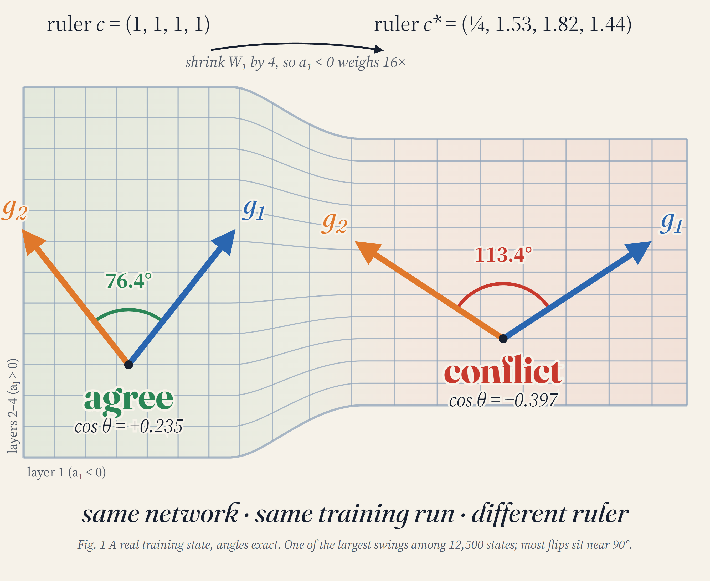
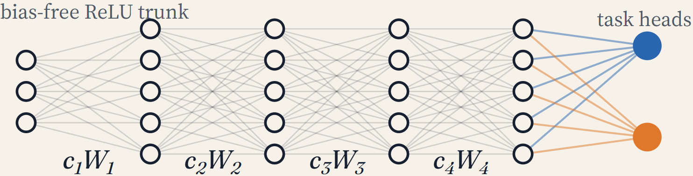
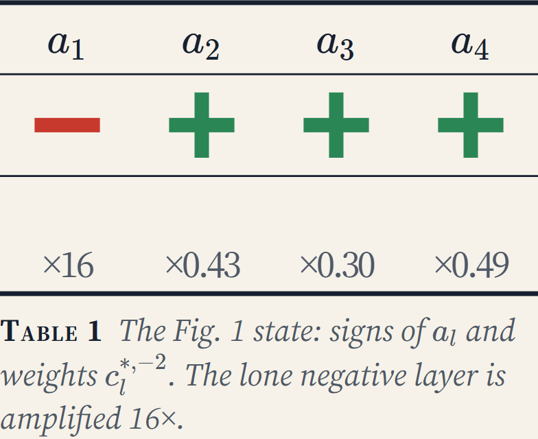
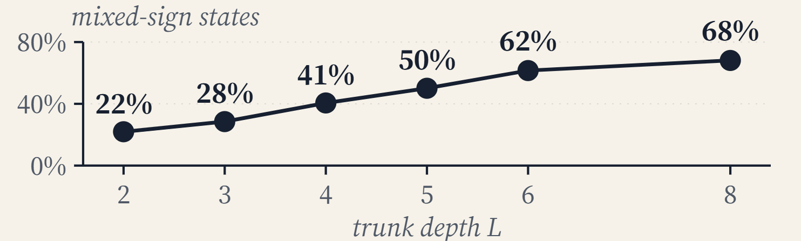
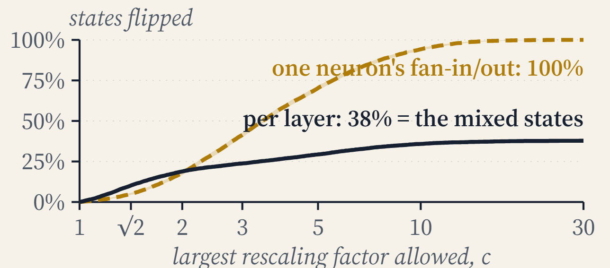
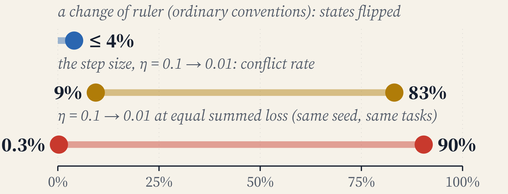
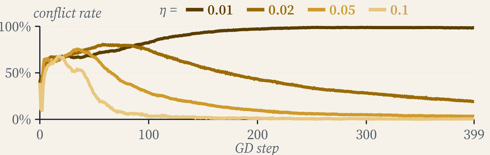
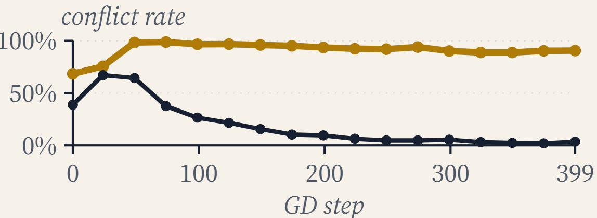

Katz School of Science and Health, Yeshiva University, New York · DeepMath 2026, Columbus, Ohio · poster session Thursday 29 October, 4:00 PM

Multi-task learning often treats “gradient conflict”, the sign of the cosine between two tasks’ parameter gradients, as a property of the tasks. But a cosine in parameter space presupposes coordinates, and therefore a metric.
Take a bias-free ReLU trunk of depth \(L\ge2\) with task-specific linear heads, trained by full-batch gradient descent on the summed loss with layerwise step sizes \(\eta_l\). For any gauge \(c\) with \(c_l>0\):

Conjugacy (standard). Positive homogeneity keeps the function, and \(\partial L/\partial(c_lW_l)=c_l^{-1}g_l\) keeps every step, so \(W_l^{(c)}(t)=c_l\,W_l(t)\) for all \(t\). Measured in float64: weights agree to \(4\times10^{-15}\) and losses to \(4\times10^{-16}\).
The reported conflict is not invariant. With \(g_i^l=\partial L_i/\partial W_l\) and \(a_l=\langle g_1^l,g_2^l\rangle\),
The denominator is positive and depends on the gauge, so at most the sign can be invariant. The question becomes: how much of the conflict comes from the tasks, and how much from the coordinates?
Observation. At a fixed step, \(\operatorname{sign}\cos_c(g_1,g_2)\) is the same for every gauge \(c\) if and only if no two \(a_l\) have strictly opposite signs.
Proof. The denominator is positive. \((\Leftarrow)\) \(N(c)=\sum_l c_l^{-2}a_l\) is a positive combination of same-sign terms. \((\Rightarrow)\) If \(a_i<0<a_j\), set \(c_i=\varepsilon\) and \(c_j=\varepsilon^{-1}\): then \(N\to-\infty\) as \(\varepsilon\to0\); swap \(i\) and \(j\) for \(N\to+\infty\). \(\blacksquare\)
Invariant form. The optimizer-weighted inner product \(\langle g_1,g_2\rangle_\eta=\sum_l\eta_l\,a_l\) is gauge-invariant (flat to \(2\times10^{-17}\)) and, to first order, equals the lookahead affinity of TAG [8]. With a uniform step size the ordinary Euclidean sign equals it.
The same argument holds entrywise under the finer neuron-wise symmetry [9, 11]. In every cell, the neuron-wise inner products include both signs.

In the state in the figure above, layer 1 is the lone negative term. Shrinking \(W_1\) by a factor of 4 weights it by 16, which is enough to flip the sum.
Setup: width-64, depth-4 trunks trained for 400 GD steps at \(\eta=0.05\), with target correlation \(\rho\in\{-0.5,-0.2,0,0.3,0.7\}\) and checkpoints at steps \(0,99,\dots,399\). Each (seed, \(\rho\), checkpoint) is a cell.
of cells have layer inner products \(a_l\) of both signs (95% CI [36.8, 38.5], 1000 seeds)
across width, depth, step size, step count and \(\rho\) sweeps; it grows with depth
median \(\eta\lambda_{\max}\) after step 99: these runs sit at the edge of stability [15]

The condition says whether some gauge can flip the sign. The practical question is how far you have to stretch the ruler.
median largest factor of the nearest flipping layerwise gauge (\(\prod_l c_l=1\))
median factor of the nearest flip that rescales a single hidden neuron
of states flipped by ordinary layerwise conventions
Input-layer step sizes anywhere in \([\eta/16,\,16\eta]\) flip 4.0% of states; random factors within \(\sqrt2\) flip 1.2%; directly trained layerwise step decay \(\eta_l=\eta\,d^{\,L-l}\), \(d\in[0.5,0.8]\), departs from the invariant sign in at most 4.3 of 125 states (500 seeds).

PCGrad [3] acts on the sign of the boxed entry. CAGrad [4], MGDA [5], Nash-MTL [6] and Aligned-MTL [7] act on all of \(G\). None of them specifies the metric. (Their -UB variants use the shared representation, which the symmetry fixes.)
Compensated GD is gauge-equivariant; trunk PCGrad is not. Its update differs from summed GD exactly when the Euclidean cosine is negative, and then by exactly
median PCGrad correction in states that a \(\sqrt2\) gauge flips (q90 4%; above 10% in under 1% of 12,500 states)
median final-loss ratio of PCGrad to summed GD, started from the flipped gauge
the same ratio for a random kick of the same norm
No benefit from the flip is detectable. Where the sign is fragile, PCGrad barely moves the step.


| Step size \(\eta\) | Checkpoint conflict | At matched summed loss |
|---|---|---|
| 0.01 | 83% | 90% (2000 steps) |
| 0.05 | 17% (12–22% across \(\rho\)) | 3.6% |
| 0.1 | 9% (7% divergent runs excluded) | 0.3% (reached by 74% of runs) |
In the matched-loss column the tasks, the seed and the loss reached are the same in every row. What changes is the optimizer’s dynamical regime. Task correlation shows through in the slow regime; near convergence, the shrinking summed gradient pushes the cosine negative whatever the tasks.
At the edge of stability [15] (\(\eta\lambda_{\max}\to2\)), 98–99% of \(\|g_1+g_2\|^2\) lies along the oscillating top Hessian eigenvector \(v\) at steps 199–399. Project \(v\) out of both task gradients:
conflict as reported (\(\eta=0.05\), 200 seeds, after initialization)
conflict with \(v\) removed
with two-step-averaged gradients, which cancel the period-2 oscillation without any Hessian

Off \(v\), the anti-alignment is bookkeeping: if the summed gradient is along \(v\), what is left of the two task gradients must cancel. The finding is that the summed gradient collapses onto \(v\) at \(\eta=0.05\) and not at \(\eta=0.01\).
Scope and real data
MNIST (digit and parity heads; bias-free \(784\times256^3\) trunk; minibatch SGD): conjugacy holds to \(2\times10^{-15}\), and a factor-3 gauge flips 8 of 300 steps. The invariance condition fails in 6% of cells, but conflict stays below 3%: this aligned-task, three-epoch run stays below the edge of stability.
Biases extend the symmetry exactly. Under LayerNorm, every layerwise rescaling is a symmetry of the function alone, and the sign is more fragile (55% mixed). Adam with \(\varepsilon=0\) admits \(\eta_l\mapsto c_l\eta_l\). Weight decay remains open.
Prior work. Path-SGD [9] and G-SGD [10] make the trajectory invariant; here the trajectory is fixed and the diagnostic is inspected. GradVac [13], Recon [12] and RotoGrad [14] act on layerwise or representation conflict, which is layerwise- but not neuron-wise-gauge invariant.
Gauge dependence appears insufficient to explain why these methods fail to beat loss summation [1, 2]. The sign is coordinate-defined, but its frequency may primarily reflect optimization.
Code
All models and training loops are written in NumPy (float64), so the conjugacy can be checked to machine precision. Torch is used only for Hessian-vector products. Each script writes the JSON file that the numbers on this page come from.
git clone https://github.com/tirth5828/gradient-conflict-gauge
cd gradient-conflict-gauge/experiments
pip install numpy scipy matplotlib torch
python conjugation_check.py| Script | Measures |
|---|---|
conjugation_check.py | exact conjugacy, sign census, reachability, PCGrad |
census_scale.py | sign census over 1000 seeds |
reachability_scale.py | nearest flipping gauge, layerwise conventions |
methods_scale.py | PCGrad, CAGrad and MGDA under the gauge |
eos_scale.py | step-size regimes, edge-of-stability projection |
exploratory.py | depth, width, biases, Adam, LayerNorm |
mnist_real.py | MNIST digit and parity tasks, minibatch SGD |
References
Citation
@misc{joshi2026gradientconflict,
title = {How Much of ``Gradient Conflict'' Is Due to the Tasks,
and How Much to the Coordinates?},
author = {Joshi, Tirth},
howpublished = {Poster, DeepMath 2026: Conference on the Mathematical
Theory of Deep Neural Networks, Ohio State University},
note = {Non-archival extended abstract},
year = {2026},
}